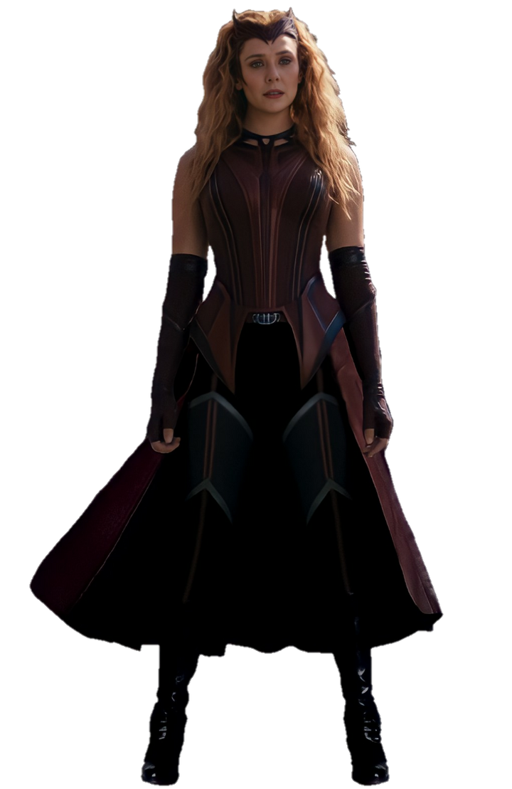
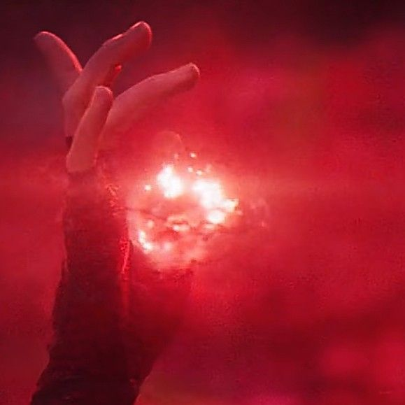

Wanda Maximoff
La sorcière rouge
Wanda Maximoff est une jeune femme sokovienne orpheline, qui s’est portée volontaires pour subir une expérimentation génétique supervisée par HYDRA, qui en utilisant le sceptre de Loki, ont créé l’un des personnages les plus puissant du MCU. Wanda s’est retrouvée avec une variété de capacités mais l’étendue complète des pouvoirs considérables de Wanda n’a probablement pas encore été entièrement documentée.
Magie du chaos
Voici la liste des capacités que la magie du chaos procure à Wanda, la sorcière rouge :
- Manipulation de la réalité
- Manipulation biologique
- Manipulation d'illusions
- Manipulation de probabilité
- Manipulation élémentaire
- Manipulation du temps
- Conjuration
- Création de la vie
- Téléportation
- Transmutation
- Don de pouvoir
- Sort de protection
- Absorption d'énergie
- Projection astrale
- Conscience interdimensionnelle
- Absorption de pouvoir
- Conversion d'énergie
